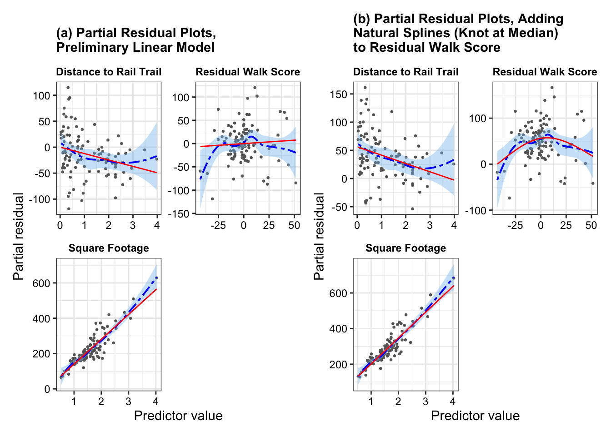
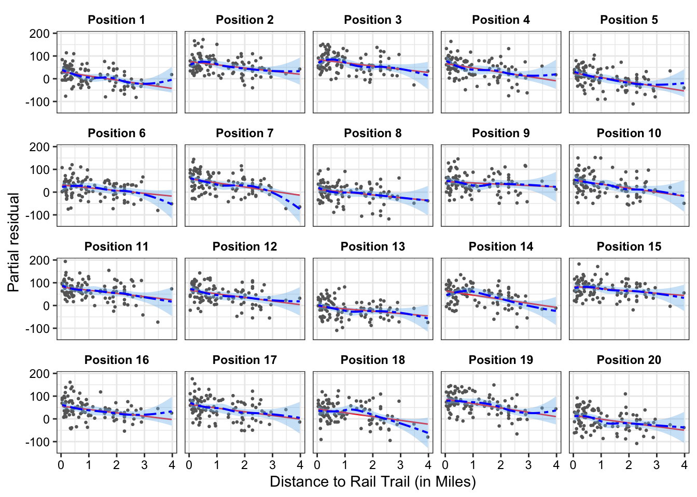
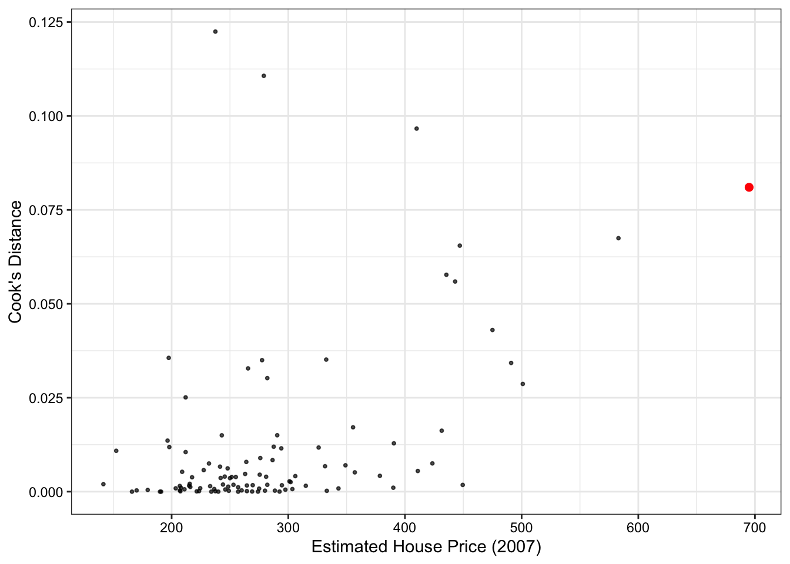
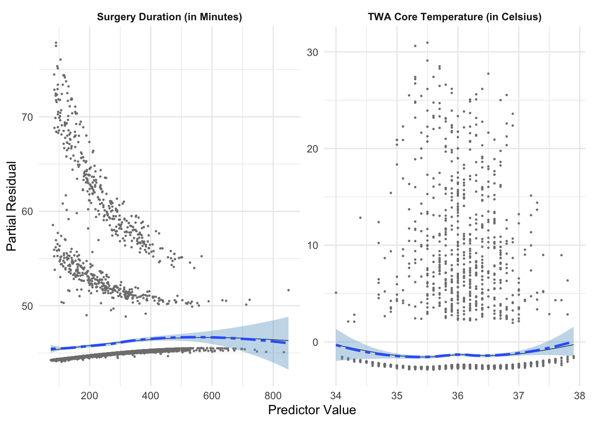
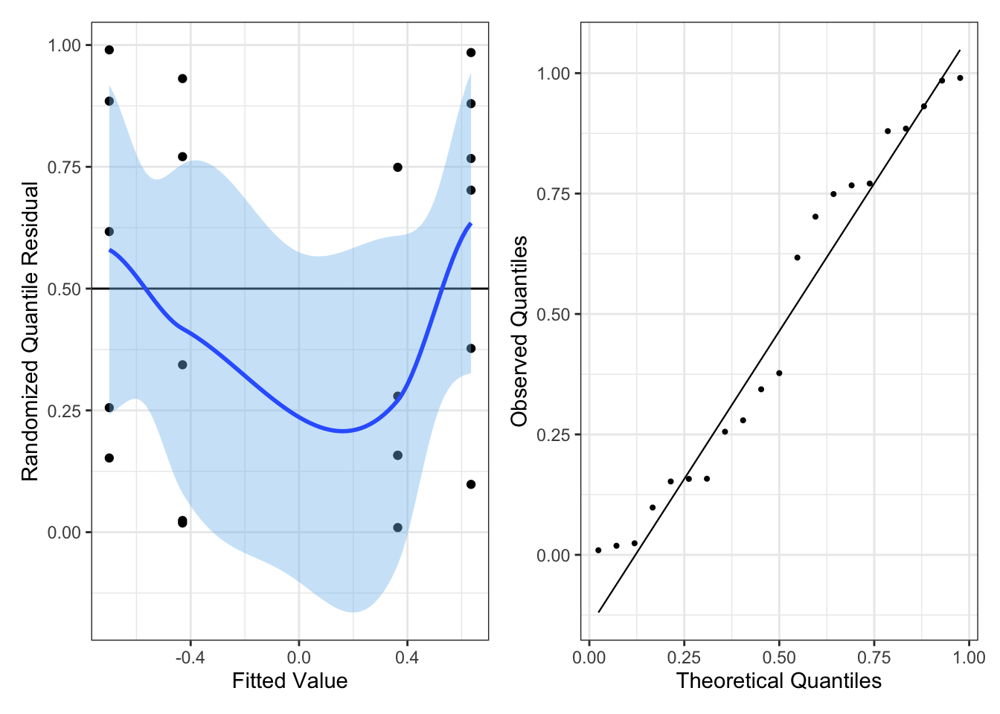
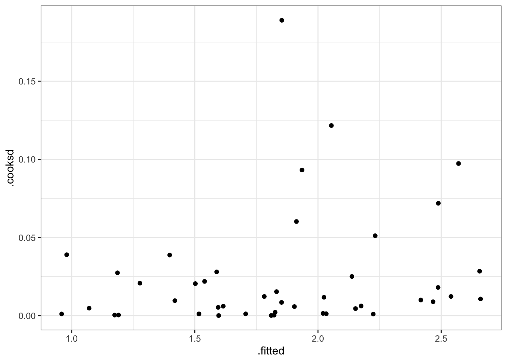

For the linear regression model \mathbf{Y} = \mathbf{X}\beta + e, we have the following assumptions:
Errors have mean 0: \mathbb{E}[Y \mid X] = 0
The error variance is constant: \text{Var}[e \mid \mathbf{X}] = \sigma^2
The errors are uncorrelated (the data points are iid): \text{Var}[e \mid \mathbf{X}] = \sigma^2
The errors are normally distributed
1.2 Diagnostics and Solutions
1.2.1 Mean Model Misspecification
Linearity: partial residual plots help us diagnose whether the true relationship between the outcome and some of the predictors is non-linear
Show the code
fit <-lm(price2007 ~ distance + resid_walkscore + squarefeet + bedgroup + zip, data = rail_trail_modeling)fit_new <-lm(price2007 ~ distance +ns(resid_walkscore, knots =c(0.5)) + squarefeet + bedgroup + zip, data = rail_trail_modeling)p1 <-partial_residuals(fit) |>mutate(.predictor_name =case_when( .predictor_name =="distance"~"Distance to Rail Trail", .predictor_name =="walkscore"~"Walking Score", .predictor_name =="bikescore"~"Biking Score", .predictor_name =="squarefeet"~"Square Footage", .predictor_name =="resid_walkscore"~"Residual Walk Score",TRUE~ .predictor_name)) |>ggplot(aes(x = .predictor_value, y = .partial_resid)) +geom_point(color ="grey40", size =0.5) +geom_smooth(color ="blue", fill ='skyblue2',linewidth =0.7, linetype ="twodash") +geom_line(aes(y = .predictor_effect), color ='red') +facet_wrap(vars(.predictor_name), scales ="free", ncol =2) +labs(x ="Predictor value", y ="Partial residual")+ggtitle("(a) Partial Residual Plots,\nPreliminary Linear Model")+theme_bw()+theme(strip.background =element_rect(fill ="white", color ="white"),strip.text =element_text(color ="black", face ="bold"),axis.text =element_text(color ="black"),plot.title =element_text(face ="bold", size =11))p2 <-partial_residuals(fit_new) |>mutate(.predictor_name =case_when( .predictor_name =="distance"~"Distance to Rail Trail", .predictor_name =="walkscore"~"Walking Score", .predictor_name =="bikescore"~"Biking Score", .predictor_name =="squarefeet"~"Square Footage", .predictor_name =="resid_walkscore"~"Residual Walk Score",TRUE~ .predictor_name)) |>ggplot(aes(x = .predictor_value, y = .partial_resid)) +geom_point(color ="grey40", size =0.5) +geom_smooth(color ="blue", fill ='skyblue2',linewidth =0.7, linetype ="twodash") +geom_line(aes(y = .predictor_effect), color ='red') +facet_wrap(vars(.predictor_name), scales ="free", ncol =2) +labs(x ="Predictor value", y ="Partial residual")+ggtitle("(b) Partial Residual Plots, Adding\nNatural Splines (Knot at Median)\nto Residual Walk Score")+theme_bw()+theme(strip.background =element_rect(fill ="white", color ="white"),strip.text =element_text(color ="black", face ="bold"),axis.text =element_text(color ="black"),plot.title =element_text(face ="bold", size =11))p1 + p2

From Figure 1(a), we see that residual walk score has a nonlinear relationship with estimated house price in 2007 – as indicated by the smoothed residual curve (in blue) diverging from the predicted effect line (in red). We would address this nonlinearity by fitting natural splines on the residual walk score, with one knot at the median. Figure 1(b) provides the updated partial residual plots when we add natural splines to the residual walk score. We see now that the predicted effect line (in red) tracks closely to the smoothed residual curve (in blue) without over-fitting to model to the turns in the smoothed residual curve.
Lineups: If we aren’t sure whether the true relationship between the outcome and a given predictor is non-linear, we can conduct a partial residual visual lineup.
For instance, it is not entirely clear whether distance has a non-linear relationship to estimated house price in 2007 or if this is just due to the high-leverage home with the largest distance to the rail trail. Figure 2 shows the partial residual line-up. If we cannot pick out the partial residual plot corresponding to the real data from the simulated data, we can conclude that there is insufficient evidence of a non-linear relationship between distance to rail trail and estimated house price in 2007 at a significance level of 0.05.
Show the code
set.seed(123)model_lineup(fit_new, fn = partial_residuals, nsim =20) |>filter(.predictor_name =="distance") |>mutate(.sample_new =paste0("Position ", .sample),.sample_new =fct_reorder(.sample_new, .sample)) |>ggplot(aes(x = .predictor_value, y = .partial_resid))+geom_point(color ="grey40", size =0.5) +geom_line(aes(y = .predictor_effect), color ='red') +geom_smooth(color ="blue", fill ='skyblue2',linewidth =0.7, linetype ="twodash") +facet_wrap(~.sample_new)+labs(x ="Distance to Rail Trail (in Miles)", y ="Partial residual")+theme_bw()+theme(strip.background =element_rect(fill ="white", color ="white"),strip.text =element_text(color ="black", face ="bold"),axis.text =element_text(color ="black"),plot.title =element_text(face ="bold", size =11))

We can decrypt (show the the position of our actual data) by running the command, which is given at the end of the line-up call (dycrypt()):
If there is numerical issues (e.g., from the predictor having large values), we can use the poly()function which constructs the design matric using an orthogonal polynomial basis.
A downside is that the coefficients are no longer is terms of the interpretable regressor terms. The fitted values though wil be the same between the two approaches for adding polynomial terms.
Regression splines model relationships as being piecewise polynomial. They require us to choose knots, which are the fixed points between which the function is polynomial. Two common approaches are natural splines and B-spline basis. Statisticians almost universally use cubic splines. Cubic splines are continuous in their first and second derivatives, making the knots almost visually imperceptible in plots of the spline.
For knot selection, a typical approach is to use quantiles of the data as knots – erring on the side of less knots (especially if there is few observations).
Errors with non-constant variance are called heteroskedastic. To detect heteroskedasticity, we can examine the residuals plotted against the fitted values.
Show the code
fit_new |>augment() |>ggplot(aes(x = .fitted, y = .resid))+geom_point(size =0.5)+geom_hline(yintercept =0)+geom_smooth(fill ='skyblue2')+labs(x ="Fitted Values", y ="Residuals")+theme_bw()+theme(axis.text =element_text(color ="black"))
In Figure 3, we have non-constant error variance. Indeed, there appears to be an approximately quadratic relationship between our fitted values and our residual terms.
We can remedy non-constant error variance by using the sandwich estimator for the variance of our estimators in all inference.
# uses sandwich estimator with HC3 estimator for OmegaConfint(fit_new, vcov =vcovHC(fit_new))
We can check for non-normality of errors using residual Q-Q plots. Using the standardized residuals, we can detect gross deviations from normality while ignoring small deviations in non-normality. An example of a Q-Q plot for linear regression is in Figure 4. Since we are doing linear regression, the theoretical quantiles correspond to a normal distribution with mean 0 and variance 1.
Like with partial residuals, we can use a lineup to detect whether the non-normality in errors is statistically significant (at a significance level of 0.05).
Note: if the sample size is sufficiently large, then violating non-normality of errors is not a serious concern. Otherwise, if the assumptions linearity and constant error variance hold, then interpret coefficient estimates with caution (since coefficient estimates would not be approximately normal).
1.3 Contaminated Errors and Outliers
Outliers: Not all outliers have a major effect on the regression line. So, their presence may not be a problem. We hence need a way to detect outliers and characterize their influence on the regression line.
If we can determine the outlier is due to some kind of measurement or recording error, we can correct the error.
If we cannot, we must make the difficult decision of whether to keep the outlier, and acknowledge that it may significantly influence our estimates, or to remove it and risk throwing away good information
One way to measure the influence of an observation on the regression is to quantify how its inclusion changes our coefficient estimates via Cook’s Distance.
Look for Cook’s Distance (D_i), where D_i \geq 1, though this is again a matter of judgment, to indicate that a particular observation substantially changes the regression fit.
Figure 5 shows that all observations have Cook’s Distances well below the standard cut-off of 1, so there does not appear that any of the homes in the data have a large influence on our regression model.
Show the code
max_price <-augment(fit_new) |>arrange(desc(price2007)) |>slice_head(n =1)augment(fit_new) |>ggplot(aes(y = .cooksd, x = price2007))+geom_point(size =0.7, alpha =0.7)+geom_point(data = max_price, aes(y = .cooksd, x = price2007),size =2, color ="red")+labs(y ="Cook's Distance", x ="Estimated House Price (2007)")+#geom_hline(yintercept = 1, linetype = "dashed")+theme_bw()+theme(plot.title =element_blank(),text =element_text(color ="black"),axis.text =element_text(color ="black"),axis.title =element_text(color ="black"))

1.4 Collinearity
When the model matrix X is not full column rank, its columns span a lower-dimensional space. There is still a unique perpendicular projection of Y onto this space, and hence a unique \hat Y. But the coordinates of that fit are not unique, meaning that there are infinite values of \hat \beta that correspond to the same squared error/prediction. If we care about inference on \hat \beta this is a serious problem.
Show the code
loess_wrapper <-function(data, mapping, ...){ p <-ggplot(data = data, mapping = mapping) +geom_point(size =0.35, color ="skyblue2") +geom_smooth(linetype ="dashed", color ="black", linewidth =0.6)return(p)}rail_trail_modeling |>select(price2007, distance, walkscore, squarefeet) |>rename(`2007 Est.\nHouse Price\n(thousands of $)`= price2007,`Distance to\nRail Trail (miles)`= distance,`Walk\nScore`= walkscore,`Square\nFootage`= squarefeet) |>ggpairs(upper =list(continuous =wrap("cor", color ="black")),lower =list(continuous = loess_wrapper,combo =wrap("barDiag", size=0.2,alpha =0.9))) +scale_x_continuous(breaks = scales::pretty_breaks(n =4))+scale_y_continuous(breaks = scales::pretty_breaks(n =4))+theme_bw()+theme(strip.background =element_rect(fill ="white", color ="white"),strip.text =element_text(color ="black", face ="bold", size =6.5),axis.text =element_text(color ="black", size =6.5))
1.4.1 Non-pairwise Collinearity Metrics
Condition Number:
However, multiple variables can be collinear even when individual pairs of variables have low correlation. One way to detect non-pairwise collinearity is to use the condition number, where we compare the largest and smallest eigenvalues of X^\intercal X:
X <-model.matrix(price2007 ~ distance + resid_walkscore + squarefeet + bedgroup + zip -1, data = rail_trail_modeling)# first step is to scale the model matrix Xscaled_x <-scale(X, center =FALSE, scale =TRUE)# Then, we can use the kappa() function on X'Xkappa(t(scaled_x) %*% scaled_x)
[1] 123.3692
Ideally, we want the condition number to be small. The general cut-off is condition numbers larger than 50 or 100. So, from the results above, we see that there is potentially concerning levels of collinearity among our predictors, which could influence the accuracy of our inference.
Variance Inflation Factors:
Another way to look at collinearity is with variance inflation factors (VIF), which can be interpreted as showing how much the variance of \hat \beta_j is inflated relative to a model where there is no collinearity (and all columns are orthogonal).
# consider using type = 'predictor' for interactions (or ignoring VIFs since compared to main effecs)car::vif(lm(price2007 ~ distance +ns(resid_walkscore, knots =c(0.5)) + squarefeet + bedgroup + zip, data = rail_trail_modeling))
A general rule of thumb is that VIF values exceeding 5 warrant further investigation, and VIFs exceeding 10 are signs of serious multicollinearity requiring correction.
General Notes: If we are confronted with collinearity, then, the question to ask is:
“Have we chosen the correct predictors for the research question?”
If we have, there is little to be done; if we have not, we can reconsider our choice of predictors and perhaps eliminate the collinear ones.
If we are interested in prediction rather than in the coefficients, collinearity is a problem insofar as it creates high prediction variance, and we might reconsider our model and use a penalization model to reduce the prediction variance.s
1.5 Interactions
An interaction allows one predictor’s association with the outcome to depend on values of another predictor.
When an interaction is present, the normal interpretation of coefficients as slopes no longer holds for the predictors involved in the interaction.
See Example 7.4
1.6 Hypothesis Tests
1.6.1 t Tests
Many useful null hypotheses can be written in terms of linear combinations of the coefficients. For example, consider a linear model with a continuous predictor X_1 and dummy-coded regressor X_2 \in \{0,1 \}:
Y = \beta_0 + \beta_1 X_1 + \beta_2 X_2 + \beta_3 X_1 X_2 We could think of several null hypotheses to test:
\beta_2 = 0: the two factor levels have identical intercepts
\beta_3 = 0: the two factor levels have identical slopes
\beta_1 = c: the slope when X_2 = 0 is some value c predicted by a theory we are testing (usually c = 0 in linear regression, which corresponds to no association)
\beta_1 + \beta_3 = 0: when X_2 = 1, there is no association between X_1 and Y
\beta_2 = \beta_3 = 0: the two factor levels have identical relationships between X_1 and Y
For all but the last listed hypothesis, we can use a t test. R conducts a t test for every coefficient by default, with c = 0.
The degrees of freedom for a t test is n - p, where p is the number of parameters in our model. We can get this via fit$df.residual. E.g., for our rail trail linear model example we have df = 96.
The function tidy() does the test for c = 0 with every other predictor held constant in the model.
Show the code
gt(tidy(fit_new)) |>fmt_number(decimals =3)
term
estimate
std.error
statistic
p.value
(Intercept)
48.607
27.295
1.781
0.078
distance
−14.779
5.039
−2.933
0.004
ns(resid_walkscore, knots = c(0.5))1
93.909
43.190
2.174
0.032
ns(resid_walkscore, knots = c(0.5))2
−18.348
22.890
−0.802
0.425
squarefeet
145.196
10.082
14.401
0.000
bedgroup3 beds
7.596
12.269
0.619
0.537
bedgroup4+ beds
−28.638
15.037
−1.905
0.060
zip1062
−30.041
9.438
−3.183
0.002
We can also use tbl_regression() which gives us the confidence intervals and p-values:
Show the code
tbl_regression(fit_new)
Characteristic
Beta
95% CI
p-value
distance
-15
-25, -4.8
0.004
ns(resid_walkscore, knots = c(0.5))
ns(resid_walkscore, knots = c(0.5))1
94
8.2, 180
0.032
ns(resid_walkscore, knots = c(0.5))2
-18
-64, 27
0.4
squarefeet
145
125, 165
<0.001
bedgroup
1-2 beds
—
—
3 beds
7.6
-17, 32
0.5
4+ beds
-29
-58, 1.2
0.060
zip
1060
—
—
1062
-30
-49, -11
0.002
Abbreviation: CI = Confidence Interval
If we have non-constant error variance and thus use the sandwich estimator, we can use the following code to conduct t tests and present our results:
Of course, a fourth option is to manually perform the t test, which might make sense if we have a complex null or would like to do a one-sided test. Below is the general code for this:
The anova() function can be used to conduct F tests for nested models. For instance, we can test whether there was a significant association between residual walk score and estimated home price in 2007 (in practice, probably not a good idea since residual walk score is random):
Show the code
# create a model without the predictorfit_no_resid_ws <-lm(price2007 ~ distance + squarefeet + bedgroup + zip, data = rail_trail_modeling)anova(fit_no_resid_ws, fit_new)
Analysis of Variance Table
Model 1: price2007 ~ distance + squarefeet + bedgroup + zip
Model 2: price2007 ~ distance + ns(resid_walkscore, knots = c(0.5)) +
squarefeet + bedgroup + zip
Res.Df RSS Df Sum of Sq F Pr(>F)
1 98 170673
2 96 160689 2 9983.3 2.9821 0.0554 .
---
Signif. codes: 0 '***' 0.001 '**' 0.01 '*' 0.05 '.' 0.1 ' ' 1
The parameters of an F-statistic are q and n - p. Df is the outputted table corresponds to q and the second row of Res.Df corresponds to n - p. E.g, we have F(2, 96) as our null distribution in this example.
1.7 Coefficient Interpretation
In a report, we just include full interpretations for the hypothesis tests and/or coefficient estimates that relevant to the practical problem at hand!
The intercept \beta_0 is the mean value of when all other regressors are 0:
\mathbb{E}[Y \mid X_1 = 0, \dots, X_q = 0] Interpreting the intercept, quoting confidence intervals, and conducting hypothesis tests for its value may only be useful when the intercept has a substantive meaning and we have observed X values nearby.
1.7.2 Slopes
Note these are the general parts of an interpretation for a continuous predictor in a linear regression:
Difference in the mean value of Y
Associated with a one-unit increase in X_1
Holding all other regressors constant
Exact interpretation depends on if the predictor is continuous or a factor level:
Test for a factor coefficient: For a given flipper length, gentoo penguins have a smaller mean bill length (M = 47.5 mm, SD = 3.1) than Adelie penguins (M = 38.8 mm, SD = 2.7), t(336) = -3.5, p = 0.001.
Confidence interval for a factor coefficient: For a given flipper length, gentoo penguin bills are shorter than Adelie penguin bills by an average of 34.3 mm (95% CI [15.01, 15.64]).
Test for slope: In Adelie penguins, there was a statistically significant association between flipper length and bill length, \hat \beta = 0.13, t(336) = 4.17, p < 0.001.
Describe a slope: Among Adelie penguins, each additional millimeter of flipper length is associated with 0.13 mm of additional bill length, on average (95% CI [0.07, 0.2]).
1.7.3 Interactions
Describing an interaction coefficient: For the interaction term between flipper length and species from Table 1: For Adelie penguins (the baseline level), the association between bill length and flipper length is 0.13 mm of bill length per millimeter of flipper length, on average (95% CI [0.07, 0.20]). But for Chinstrap penguins, the association is 0.13 + 0.09 = 0.22 mm of bill length per millimeter of flipper length, on average (95% CI [0.11, 0.31]). [LOOK AT THEOREM 5.5 AND HW 3 TO CONFIRM]
A helpful way to visualize interaction terms, polynomial terms, (or other complex relationships) is to use an effects plot:
In an effects plot, non-focal predictors are set to their mean (numeric variables), reference level (factors), or “most common” value (mode) in case of character vectors.
1.7.4 Spline or Polynomial Terms
If we fit a spline or a polynomial for our predictor-of-interest, we cannot determine the statistical significance or effect size from the outputted regression tables. Instead, we must use the following framework:
Do a LRT/F-test for nested models to obtain the overall significance of the predictor-of-interest.
anova(fit_new, fit_no_resid_ws)
Analysis of Variance Table
Model 1: price2007 ~ distance + ns(resid_walkscore, knots = c(0.5)) +
squarefeet + bedgroup + zip
Model 2: price2007 ~ distance + squarefeet + bedgroup + zip
Res.Df RSS Df Sum of Sq F Pr(>F)
1 96 160689
2 98 170673 -2 -9983.3 2.9821 0.0554 .
---
Signif. codes: 0 '***' 0.001 '**' 0.01 '*' 0.05 '.' 0.1 ' ' 1
Create an effects plot fort the variable of interest
For example, when the residual walk score is -43.01, the predicted house price (in 2007) is $259,570 in Northampton, MA (95% CI [\$213,440, \$305,710]) versus when the residual walk score is -36.08, the predicted house price (in 2007) is $271,780 in Northampton, MA (95% CI [\$233,600, \$309,960]) – holding all other covariates at their mean or reference level.
2 Logistic Regression
When Y \in \{0, 1\}, X \in \mathbb{R}^p, and \beta \in \mathbb{R}^p, logistic regression models the response as:
\text{logit(Pr}(Y = 1 \mid X = x)) = \beta^\intercal x which is equivalent to saying:
\begin{aligned}
\text{Pr}(Y = 1 \mid X = x) &= \text{logit}^{-1}(\beta^\intercal x)\\
\text{odds}(Y = 1 \mid X = x) &= \exp(\beta^\intercal x)\\
\log(\text{odds}(Y = 1 \mid X = x)) &= \beta^\intercal x
\end{aligned}
Logistic regression makes two basic assumptions about the population relationship:
The log-odds is linearly related to the regressors: \log(\text{odds}(Y = 1 \mid X = x)) = \beta^\intercal x
The observation Y_i are conditionally independent given the covariates X_i
2.2 Linearity Diagnostics
Empirical Link Plot (EDA):
Example:Figure 6 shows that TWA core temperature during surgery appears to have an approximately linear relationship with the log-odds of superficial post-op infection but possibly a non-linear relationship with log-odds of a serious post-op infection.
Another method is to use partial residuals, just like we did for linear regression.
Example:Figure 7 shows that surgery duration and TWA core temperature both appear to have non-linear relationships with the log-odds of serious infection, which confirms what we see in the empirical link plot.
Show the code
core_temperature_model <- core_temperature |>filter(DEAD ==0| DurationHosp >=30) |>mutate(WeightLoss =ifelse(WGHTLOSS ==1, "Yes", "No"),SteroidUsage =ifelse(SteroidHx ==1, "Yes", "No"),SurgeryDuration = SurgDuration)prelim_fit <-glm(SeriousInfection ~ TWATemp + WeightLoss + SurgeryDuration + SteroidUsage,data = core_temperature_model,family =binomial()) partial_residuals(prelim_fit) |>mutate(.predictor_name =case_when( .predictor_name =="Age"~"Age (in Years)", .predictor_name =="BMI"~"Body Mass Index (kg/m^2)", .predictor_name =="SurgeryDuration"~"Surgery Duration (in Minutes)", .predictor_name =="TWATemp"~"TWA Core Temperature (in Celsius)",TRUE~ .predictor_name )) |>ggplot((aes(x = .predictor_value, y = .partial_resid)))+geom_point(size =0.3, color ='grey50')+geom_line(aes(y = .predictor_effect), linewidth =0.3)+geom_smooth(method ="loess", linetype ="twodash", fill ="skyblue3")+facet_wrap(~.predictor_name, scales ="free")+labs(y ="Partial Residual",x ="Predictor Value")+theme_minimal()+theme(strip.text =element_text(face ="bold"))
We address the non-linearity in Figure 7 by fitting natural splines to both surgical duration and TWA core temperature.
Show the code
updated_fit <-glm(SeriousInfection ~ splines::ns(TWATemp, knots =c(35.7, 36, 36.4)) + WeightLoss +ns(SurgeryDuration, knots =c(550)) + SteroidUsage,data = core_temperature_model,family =binomial()) partial_residuals(updated_fit) |>mutate(.predictor_name =case_when( .predictor_name =="Age"~"Age (in Years)", .predictor_name =="BMI"~"Body Mass Index (kg/m^2)", .predictor_name =="SurgeryDuration"~"Surgery Duration (in Minutes)", .predictor_name =="TWATemp"~"TWA Core Temperature (in Celsius)",TRUE~ .predictor_name )) |>ggplot((aes(x = .predictor_value, y = .partial_resid)))+geom_point(size =0.3, color ='grey50')+geom_line(aes(y = .predictor_effect), linewidth =0.3)+geom_smooth(method ="loess", linetype ="twodash", fill ="skyblue3")+facet_wrap(~.predictor_name, scales ="free")+labs(y ="Partial Residual",x ="Predictor Value")+theme_minimal()+theme(strip.text =element_text(face ="bold"))

Randomized Quantile Residuals:
A third method is to use randomized quantile residuals. We can use plots of randomized quantile residuals against predictors and/or fitted values, as with any other residuals, to check the overall fit of our model.
If the model is correctly specified, we would want the conditional mean of the randomized quantile residuals to be approximately 0.5.
It is also useful to check that their distribution is indeed uniform (e.g. with a Q-Q plot). When the model is incorrectly specified, the distribution will not be uniform, producing patterns on the residual plots that can be interpreted.
Example: Below is an example with Pima women data from the MASS package.
Roughly speaking, a calibrated model is one whose predicted probabilities are accurate. For example, if the model predicts \text{Pr}(Y = 1 \mid X = x) = 0.8 for a particular x, and we observe many responses with that x, about 80\% of those responses should be 1 and 20\% should be 0.
We start by converting the response from a factor to 0 or 1, so the smoother can take the average. Figure 9 shows that the calibration looks good across most of the range in our data, but as the predicted probability gets over 0.6, we see odd behavior; examining the plotted points, it appears this is due to a few observations with high predicted probability but Y = 0. We should not get too worried over two or three observations, so this is not particularly concerning.
But perfect calibration does not make a good model. Calibration hence should be used together with other measures of the adequacy of the model fit, not on its own!
2.4 Hypothesis Tests
Wald tests are what tidy() defaults to for GLMs. Wald tests use a z test statistic and, by default tidy() tests \beta = 0.
2.4.1 Wald Tests
First, we can find a confidence interval for a probability for a specific set of regressors:
Example interpretation: A 95% confidence interval for the odds ratio associated with having a pregnancy is [0.272, 1.47]. Since the confidence interval overlaps with 1, we cannot conclusively say whether prior pregnancy is associated with an increase or decrease in odds.
2.4.3 Deviance Tests
Deviance tests are used for nested models and thus equivalent to an F test in linear regression. Specifically:
\text{Dev}_{\text{reduced}} - \text{Dev}_{\text{full}} \overset{\text{d}}{\rightarrow} \chi^2_q, \quad \text{where } q \text{ is the diff in the degrees of freedom}
Example code:
Show the code
pima_larger_fit <-glm(type ~ pregnancy + bp + age + glu,data = Pima.tr, family =binomial())anova(pima_fit, pima_larger_fit, test ="Chisq") #chisq is same as LRT
Analysis of Deviance Table
Model 1: type ~ pregnancy + bp
Model 2: type ~ pregnancy + bp + age + glu
Resid. Df Resid. Dev Df Deviance Pr(>Chi)
1 197 246.37
2 195 194.34 2 52.031 5.032e-12 ***
---
Signif. codes: 0 '***' 0.001 '**' 0.01 '*' 0.05 '.' 0.1 ' ' 1
Here, q = 2. Since the p-value is significant we reject the null hypothesis that both age and glucose status have coefficients equal to one (meaning at least one is associated with a change in the odds of diabetes status), at a significance level of 0.05.
Abbreviations: CI = Confidence Interval, OR = Odds Ratio
Example interpretation:Table 2 gives the results of the logistic regression fit. Women with prior pregnancies were less likely to have diabetes (OR = 0.63, 95% CI [0.27, 1.5]), but this result was not statistically significant (z = -1.1, p = 0.27). A larger sample may be necessary to determine if a relationship exists in the population.
Another one: Each unit of increase in blood pressure (measured in mm Hg) is associated with an increase in the log-odds of diabetes of 0.04, or a multiplication in the odds of diabetes by 1.04 (95% CI [1.01, 1.07]).
2.6 Outliers
We can approximate Cook’s distance fairly well to estimate the influence of each observation on our coefficient estimates, using augment just like before.
We could also likely remove the outliers and see if it qualitatively changes our findings if we aren’t sure.
3 Other Exponential Families
3.1 Assumptions
When we fit a generalized linear model (such as Binomial and Poisson models), we make three key assumptions:
The observations are conditionally independent given X
The response variable follows the chosen distribution
The mean of the response is related to the predictors through the chosen link function and functional form
Residual diagnostics can be used to check the latter two assumptions.
3.2 Diagnostics
We can use similar diagnostics to what we used for logistic regression. A good precursor to these is an empirical link plot, which would be done in the EDA section.
Partial Residuals:
Show the code
ants <-read.csv("data/ants.csv")ants_fit <-glm(Srich ~ Latitude + Elevation + Habitat, data = ants,family =poisson())partial_residuals(ants_fit) |>ggplot(aes(x = .predictor_value, y = .partial_resid)) +geom_point(color ="grey40", size =0.5) +geom_smooth(color ="blue", fill ='skyblue2',linewidth =0.7, linetype ="twodash") +geom_line(aes(y = .predictor_effect), color ='red') +facet_wrap(vars(.predictor_name), scales ="free", ncol =2) +labs(x ="Predictor value", y ="Partial residual")+theme_bw()+theme(strip.background =element_rect(fill ="white", color ="white"),strip.text =element_text(color ="black", face ="bold"),axis.text =element_text(color ="black"),plot.title =element_text(face ="bold", size =11))
Randomized Quantile Residuals:
Show the code
library(agridat)seed_fit_1 <-glm(cbind(germ, n - germ) ~ extract + gen,data = crowder.seeds, family =binomial())seed_aug <-augment_quantile(seed_fit_1)p1 <- seed_aug |>ggplot(aes(x = .fitted, y = .quantile.resid))+geom_point()+geom_hline(yintercept =0.5)+geom_smooth(fill ='skyblue2')+labs(x ='Fitted Value', y ='Randomized Quantile Residual')+theme_bw()p2 <- seed_aug |>ggplot(aes(sample = .quantile.resid))+geom_qq_line(linewidth =0.4, distribution = stats::qunif) +geom_qq(size =0.75, distribution = stats::qunif)+labs(x ='Theoretical Quantiles',y ='Observed Quantiles')+theme_bw()p1 + p2

3.3 Binomial Regresson
The binomial distribution is a common response distribution whenever outcomes are binary, or whenever we count a certain binary outcome out of a total number of trials.
The binomial distribution is suitable when there is a fixed and known total number of trials. Each observation hence consists of a number of successes and a total number of trials; the number of trials may differ between observations.
The model is (with a logit-link function, the default):
n_iY_i \mid X_i = x_i \sim \text{Binomial}(n_i, \text{logit}(\beta^\intercal x_i)) Hence, the sample proportion Y_i should be proportional to \text{logit}(\beta^\intercal x_i).
Y_i is the rate/probability of success!
In R, a binomial response variable for n > 1 can be provided as a a two-column matrix with the number of successes and the number of failures.
library(agridat)seed_fit_1 <-glm(cbind(germ, n - germ) ~ extract + gen,data = crowder.seeds, family =binomial())seed_fit_2 <-glm(cbind(germ, n - germ) ~ extract * gen,data = crowder.seeds, family =binomial())
3.3.1 Inference and Predictions
Crowder Seed Example:
Show the code
crowder.seeds |>mutate(germ_rate = germ/n) |>ggplot(aes(x = gen, y = germ_rate, color = extract))+geom_boxplot()+labs(y ='Germination Rate', x ='Seed Variety')+theme_bw()
Show the code
seed_test <-anova(seed_fit_1, seed_fit_2, test ="Chisq")seed_test
Analysis of Deviance Table
Model 1: cbind(germ, n - germ) ~ extract + gen
Model 2: cbind(germ, n - germ) ~ extract * gen
Resid. Df Resid. Dev Df Deviance Pr(>Chi)
1 18 39.686
2 17 33.278 1 6.4081 0.01136 *
---
Signif. codes: 0 '***' 0.001 '**' 0.01 '*' 0.05 '.' 0.1 ' ' 1
Based on the analysis of deviance table, we conclude that that extract differs by side type, \chi^2(1) = 6.41, p = 0.011.
Like with logistic regression, we can use tbl_regression() to compute the coefficients in each model. E.g., for the interaction model:
tbl_regression(seed_fit_2, exponentiate =TRUE)
Characteristic
OR
95% CI
p-value
extract
bean
—
—
cucumber
1.72
1.05, 2.81
0.031
gen
O73
—
—
O75
0.86
0.56, 1.34
0.5
extract * gen
cucumber * O75
2.18
1.19, 3.97
0.011
Abbreviations: CI = Confidence Interval, OR = Odds Ratio
We can also compute the predictions and the standard errors. From the table, we see that the ’75 seeds with cucumber extract have the highest predicted probability of germination.
# first we create a grid of all possible versions of the relevant regressors we want to get predictions for:xs <-expand.grid(gen =c("O75", "O73"),extract =c("bean", "cucumber"))predictions <-predict(seed_fit_2, newdata = xs,type ="response", se.fit =TRUE) # response = rate scalegt(data.frame(gen = xs$gen, extract = xs$extract,pred_germ_rate = predictions$fit, se = predictions$se.fit)) |>fmt_number(decimals =3)
gen
extract
pred_germ_rate
se
O75
bean
0.364
0.029
O73
bean
0.398
0.044
O75
cucumber
0.681
0.027
O73
cucumber
0.532
0.042
3.3.1.1 Interpretation
Show the code
library(Sleuth3)island_fit <-glm(cbind(Extinct, AtRisk - Extinct) ~log10(Area), data = case2101,family =binomial())exp(coef(island_fit))
(Intercept) log10(Area)
0.3023423 0.5045408
Show the code
ci <-exp(confint(island_fit)['log10(Area)',])ci
2.5 % 97.5 %
0.3910622 0.6422837
Interpretation: a ten-fold increase in island size (i.e., an island that is 10 times larger) is associated with the odds of extinct being multiplied by 0.5 (95% CI [0.39, 0.64]) (if not on log scale, would be a one-unit increase in X).
3.4 Poisson Regression
If a certain event occurs with a fixed rate, and the events are independent (so that the occurrence of one event does not make another more or less likely), then the count of events over a fixed period of time will be Poisson-distributed. This makes Poisson GLMs well-suited for response variables that are .
The canonical link for a Poisson distribution is the log-link, meaning that under the Poisson model, we have:
\log(\mathbb{E}[Y \mid X = x]) = \beta^\intercal x which is equivalent to:
\mathbb{E}[Y \mid X = x] = \exp(\beta^\intercal x)
Thus, the variance of Y depends on X in Poisson GLMs!
3.4.1 Inference and Predictions
Ant Example:
Show the code
# omitted EDA but idea is to see which covariates are associated with the ant species counts in the dataants_fit <-glm(Srich ~ Latitude + Elevation + Habitat, data = ants,family =poisson())tbl_regression(ants_fit, exponentiate =TRUE)
Characteristic
IRR
95% CI
p-value
Latitude
0.79
0.70, 0.89
<0.001
Elevation
1.00
1.00, 1.00
0.002
Habitat
Bog
—
—
Forest
1.89
1.50, 2.39
<0.001
Abbreviations: CI = Confidence Interval, IRR = Incidence Rate Ratio
Example Interpretation: One additional degree in latitude is associated with the mean number of ant species being multiplied by 0.79, holding all other covariates in the model constant.
We can also find confidence intervals by exponentiating the confidence interval based on the profile likelihood:
Another example (Howard the Duck): Increasing the fraction of time a duck spends at the park by 0.1 is associated with the mean number of hospitalizations being multiplied by 1.09 (95% CI [1.06, 1.13]), holding all other covariates in the model constant.
3.4.2 Offsets
Offsets are useful when the observed counts recorded for different population sizes or time periods.
The person-years column indicates that people in the smoking study were observed for different number of years and/or there were different numbers of people in the study who were in each age range.
If we are interested in death rate, we could model the rate directly as some function of our covariates.
In turn, we could model the outcomes (deaths in our case) as approximately Poisson, given the death rate f(\beta^\intercal X):
Y \sim \text{Poisson}(\exp(\beta^\intercal X) + \log(P)) where P is the offset, i.e., a term in our model that is fixed to have coefficient one rather than a slope that is estimated.
Note for deaths, we are technically approximately Poisson as the upper-bound on deaths is the number of people in our study. That said, so long as the death rate is low, the Poisson distribution will assign very little probability on impossible death numbers
If the model with the offset is true, then we would expect a linear relationship between \log(Y/P) and X. We can use the offset argument in the glm() function to specify our offset:
Now suppose we want to compare smokers and non-smokers at age 40, calculating a risk ratio: the ratio of risk of death for smokers versus non-smokers. A simple way would be to make a prediction and take the ratio. To predict the rate of death, we can predict the mean number of deaths for one person-year:
# or with:coef_vec <-c(0, 0, 0, 1, 40, 1600)exp(sum(coef_vec *coef(smoke_fit)))
[1] 3.927567
The standard errors are not independent. We can create the Wald confidence interval by leveraging the fact that the variance and mean are equal in Poisson models.
The quite a large confidence interval is indicative of the difficulty in estimating risk ratios when the underlying rate of events is so low.
3.5 Overdispersion
Overdispersion is when there is more variance in Y than the response distribution would predict. This could be due to:
Insufficient predictors. That is, there might be other factors associated with the expected value of Y that we do not observe
There might be correlations we did not account for (e.g., a binomial distribution assumes the n trials are independent but what if success in one is correlated with increased success in the others?)
A remedy for overdispersion is to use quasi-likleihood. These can be fit using quasibinomial() and quasipoisson() families in the glm() function. Compared to non-quasi models, the estimates of the coefficients will be the same, only the confidence intervals differ, witht heir width expanding by a constant factor
We can check for overdispersion using Q-Q plot of randomized quantile residuals
Example: returning to the seed data:
Characteristic
OR
95% CI
p-value
extract
bean
—
—
cucumber
1.72
0.88, 3.37
0.13
gen
O73
—
—
O75
0.86
0.48, 1.58
0.6
extract * gen
cucumber * O75
2.18
0.96, 4.94
0.080
Abbreviations: CI = Confidence Interval, OR = Odds Ratio
Important Note: since overdispersed models no longer specify a distribution of the outcome conditional on the covariates, tests based on the log-likelihood are no longer valid and we can no longer use randomized quantile residuals or do line-ups.
We can still still do Wald Tests and interpret coefficients using the new Confidence Interval
Estimating the dispersion parameter…
sum(residuals(ants_fit, type ='deviance')^2)/ants_fit$df.residual
[1] 1.017261
3.6 Outliers
We can approximate Cook’s distance fairly well to estimate the influence of each observation on our coefficient estimates, using augment just like before.
We could also likely remove the outliers and see if it qualitatively changes our findings if we aren’t sure.
Show the code
augment(ants_fit) |>ggplot(aes(x = .fitted, y = .cooksd))+geom_point()+theme_bw()

4 Bootstrapping (Brief Aside)
So far, when we have discussed inference (such as hypothesis tests and confidence intervals), we have used it to try to learn about the underlying population relationships, such as to do inference on the factors associated with some outcome.
To do this inference, we relied on mathematical derivations of the distribution of estimators and statistics. These derivations rely on certain about the data and the population it is drawn from, and if those assumptions are not true, the derivations are not valid.
Boostrapping is an alternative way to esitmate the distribution of estimators and statistics. This can lead to more accurate uncertainty quantification for coefficients (that said, if the sample is not iid, then resampling from the observed data is not likel obtaining a sample from the population…)
5 Penalized Models
Helpful if we care about prediction over inference and thus want to minimize the total error (which is a combination of bias and variance).
Penalization methods are also helpful when we have p > n since that have a unique solution even with a higher dimension of regressors than observations.
5.1 Ridge Regression
Ridge Regression penalizes the L-2 norm of the covariates. We can implement Ridge Regression using the glmnet package, which requires us to provide X as a matrix and Y as a vector of responses. Note that glmnet() standardizes each column to have variance 1 automatically.
# if we want to plot to see what is happening:plot(cv_results)
While the coefficients of Ridge Regression are not fully interpretable, we can look at which predictors have the largest magnitudes to get a sense of the relative effect size between different covariates and our outcome variable.
Show the code
coefs <-coef(ridge_fit, s = cv_results$lambda.min)coefs[order(abs(coefs[, 1]), decreasing =TRUE)[1:5], ]
Ridge Regression is particularly helpful when there are collinear predictors – which result in high prediction variance (encourages the effects to be ``shared” between collinear predictors). So, Ridge Regression reduces the variance of predictions.
5.2 Lasso
Lasso is another penalized regression model. Its most useful propoerty is that (depending on the value of the penalization parameter), it forces many of the coefficient estimates to be exactly zero. That is, Lasso promotes sparsity, which matches real-world populations where we expect the true coefficients to be sparse (think: genetics)
We can implement Lasso with glmnet (the only difference is now we set \alpha = 1).
Importantly, it can be shown that if we know the right penalization value, the model selection by Lasso is model selection consistent (if chooses all and only the true non-zero coefficient with probability 1 as the sample size tends to infinity).
While we choose our penalization value based on cross-validation, so model selection consistency might not hold.
5.3 The Elastic Net
Elastic net generalizes the case of Ridge Regression and Lasso by allowing both \alpha and \lambda to be hyperparameters, the combination of which trades off the benefits of Ridge Regression and Lasso. That is, with a \alpha closer to one, more sparsity is induced, but with a \alpha closer to 0, variance from collinearity is reduced more.
To cross-validate over both lambda and alpha, you have to manually loop over alpha values yourself, and run cv.glmnet() inside that loop.
5.4 Lasso Model Example (on Genetic Data)
set.seed(47)genedat <-read_csv('data/genedat-exam.csv')x <-model.matrix(Disease ~ . -1-CaseId -X, data = genedat) Y <-if_else(genedat$Disease =='control', 0, 1)cv_genedat <-cv.glmnet(x, Y, alpha =1, family ="binomial") #ideally would have done group cv herefit_genedat <-glmnet(x, Y, family ="binomial", alpha =1)coefs <-coef(fit_genedat, s = cv_genedat$lambda.min)results_df <-data.frame(coeff_est = coefs[,1]) |>rownames_to_column('covariate') |>filter(coeff_est !=0, !grepl('Intercept', covariate)) |>arrange(desc(abs(coeff_est))) |>slice_head(n =10) |>gt() |>fmt_number(decimals =2) |>cols_align_decimal(coeff_est)# ignoring within person correlation for now, but would likely want to subset data to just one cortex area especially since there isn't two observations (could also do mixed effects approach as a future step). Also, if goal is prediction, we would want to have test and train split sets -- probably by group to avoid data leakage
set.seed(123)folds <-group_vfold_cv(genedat, group = CaseId, v =5)lasso_errors <-sapply(folds$splits, function(split) { train <-analysis(split) train_x <-model.matrix(~ . -1-X -Disease -CaseId, data = train) test <-assessment(split) test_x <-model.matrix( ~ . -1-X -Disease -CaseId, data = test) fit_genedat <-glmnet(train_x, train$Disease, family ="binomial", alpha =1) pred <-predict(fit_genedat, newx = test_x, s = cv_genedat$lambda.min,type ='response') pred_class <-if_else(pred >=0.5, 'autism', 'control')mean(pred_class == test$Disease)})mean(lasso_errors)
[1] 0.7375425
6 Prediction
6.1 Splitting the Data
6.1.1 General Data Splitting
set.seed(47)car_split <-initial_split(mtcars) #default is 3:1 training-test splittrain_data <-training(car_split)test_data <-testing(car_split)
6.1.2 With Stratification
Including a strata is helpful, particularly if there is class imbalance in our covariates or outcome to the point where it is possible that training and/or test won’t have the same levels of the variables
Helpful if there is correlation between observations which would lead to data leakage concerns if we do not split the data by group.
car_split <-group_initial_split(mtcars, group = cyl)train_data <-training(car_split)test_data <-testing(car_split)
6.2 Nested Cross Validation
Often, we might need to do cross-validation and want to keep a hold out set that we can test our model on later. Here would be a a framework for nested cross validation:
Split the full dataset into testing and training (we might do this randomly, by time, by group, etc.)
On the training data do k-fold cross validation to select any needed parameters (e.g., penalization parameters)
Fit the model on the full training data with the selected tuning parameter values
Assess predictive performance on the test data
6.3 Useful Metrics
Report on test data but could be interesting to compare test performance to how it performs on training data
If test data performance is same or better than training data, this indicates that the model is underfit/biased
If the test data performance is much lower than the training data, this might raise concerns about overfitting
For regression:
Mean-Squared Error (MSE)
Root Mean-Squared Error (RMSE): a measure of the average magnitude of the errors between predicted and actual values in a regression model
Actual versus Predicted Outcome Plot (ideal would be along the main diagonal)
Note: when looking at accuracy, always report what the base incidence rate is (this would be the accuracy of a null model).
7 Missing Data
Steps to handling missingness:
Acknowledge the missingness
Discuss possible reasons for the missingness
Note the implication to the analysis
When complete-cases analysis is not concerning:
When data is missing completely at random
When missingness only depends on observed covariates
See examples in Chapter 22
Some general notes:
Impute if clear value that should be filled in.
Can impute to mean if needed (if there is not much variability in the covariate
Generally, we weary of imputing the response variable only it is very clear
8 Multiple Testing
One concern if we are conducting several hypothesis tests is multiple testing. While not in the scope for the DA exam to correct for (likely), it could be an important limitation to mention in the report.
9 Causal Claims
If we are confident in our causal model and can control for the necessary confounders, we can estimate a chosen causal path.
In this situation, our obligation is to make clear the limitations of our claims:
If our regression model is misspecified or otherwise incorrect, our estimates may be wrong.
If our causal model is missing important confounders, or we have measured some confounders incompletely or inaccurately, our estimates may include some bias from confounding.
If our data comes from a specific sample or subset of a population, the causal claims may not generalize beyond it.
Note: choosing confounders to allow us to estimate one coefficient causally does not necessarily imply that all the other coefficients in the model can be interpreted causally.